Home > その他 > 初めてのPDB登録
PDBへの登録についてです。タイトルの初めてのというのは、初めての人へという意味ではなく、初めて登録してみて初心者視点で解説するという意味です。 初めてPDBへの登録を行ったうえで、つまづいたポイントを中心にまとめました。ファイルの準備
必要なファイルは使用したプログラムなどで少し変わるようです。 私が使用したプログラムはXDS → SCALA → Molrep → PHENIX & Cootです。- 原子座標ファイルの準備 最終精密化後のPDBファイルをテキストエディタで編集します。
- PHENIXの場合、非タンパク質分子（水やリガンド）の後ろにあるTERを削除します。 REFMACの場合は、逆にポリマーの間にTER、最後にENDを追加するようです。
- ヘッダ内にある全角文字を削除します。PHENIXの場合、1行目に "REMARK Date 2013-07-03 Time 02:43:22 東京 (標準時) +0900 (1372787002.37 s) " のように全角文字が入ってしまうので、一行目を削除します。 全角文字があってもファイル形式のチェックでエラーは出ませんが、その後のセッションの読み込みなどで 不具合が生じるようです。
- 構造因子ファイルの準備 位相を付ける前のMTZファイルを準備します。ここではSCALAのアウトプットファイルです。
gzip形式（.gz）圧縮
UNIXで使用される形式なので、Windowsユーザーにはなじみが薄いかと思います。 しかし、登録するには.gzip形式（.gz）へ圧縮する必要があるようです。 圧縮にはPeaZipを使うと楽です。原子座標ファイルと構造因子ファイルを圧縮します。- ダウンロード&インストール PeaZipインストーラをダウンロードして、インストールします。
- 圧縮 PeaZipを起動して、圧縮するファイルを選んで "Convert"をクリックします。 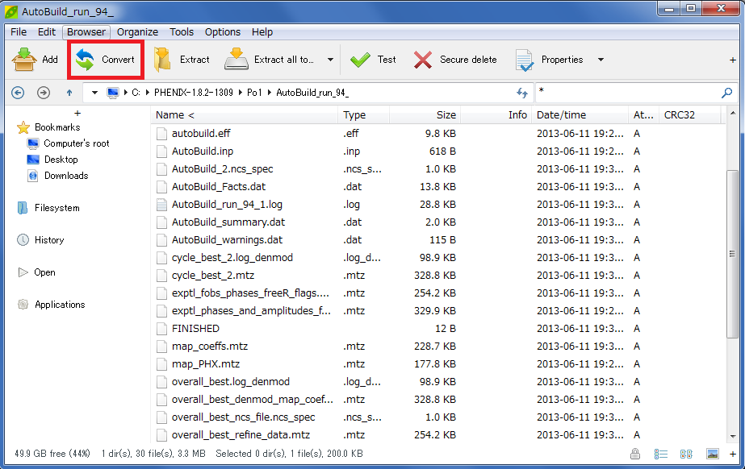
プルダウンメニューから "GZip" を選択して、"OK" をクリックします。 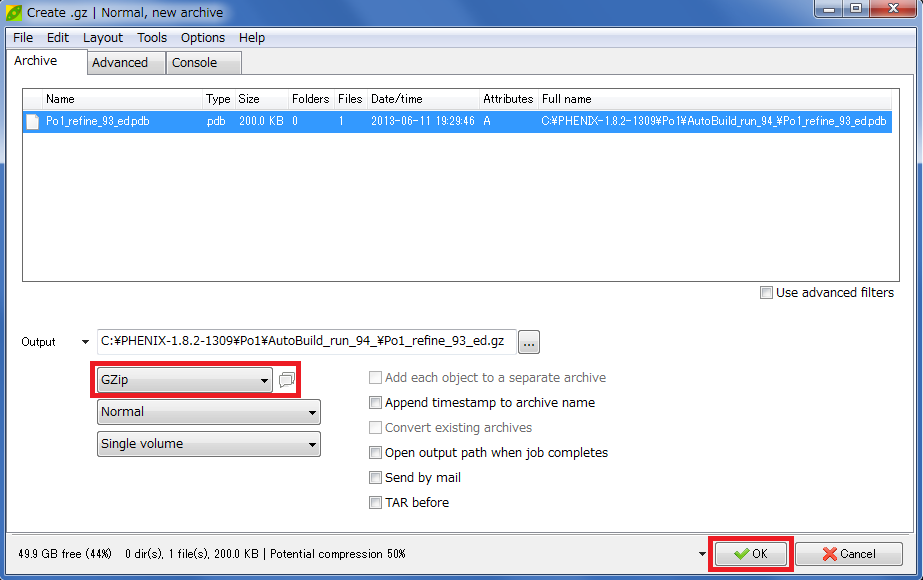
登録 ADIT
- PDBj → ADIT登録ツール PDBjのADIT登録ツールから登録します。 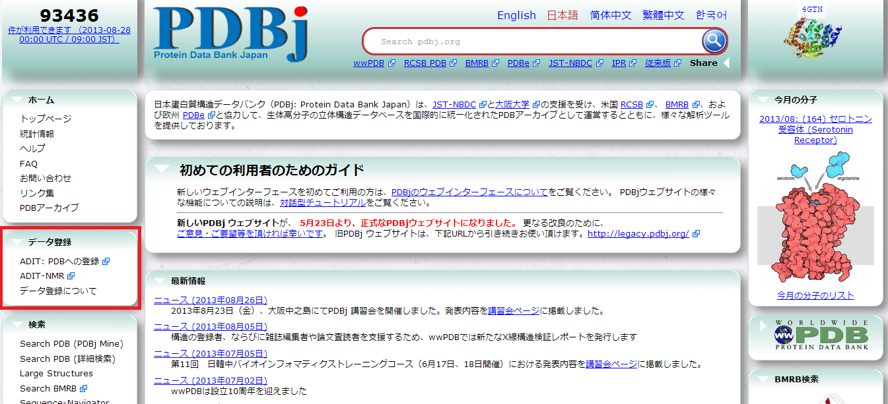
- ADIT登録ツール 〜新しいセッションの開始〜 "新しいセッションを開始" の実験手法と分子構造をそれぞれX-rayと蛋白質として、開始をクリックします。 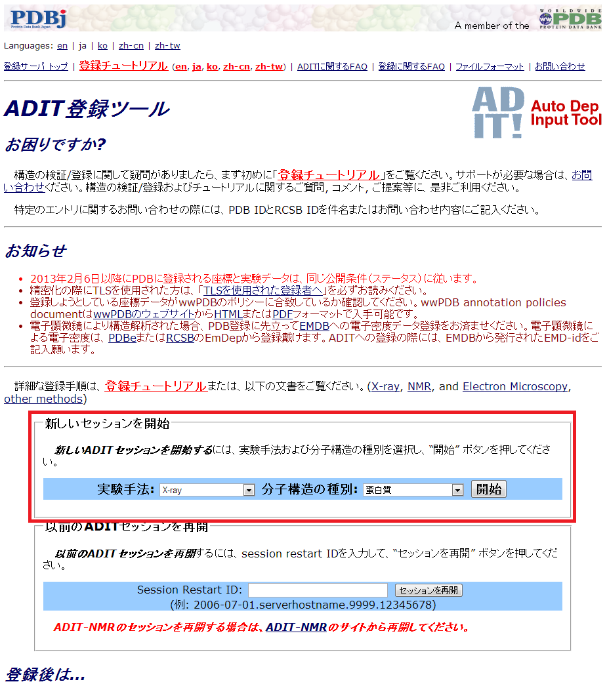
- ファイルの選択 gzip形式（.gz）に圧縮した原子座標ファイルと構造因子ファイルとファイルタイプを選択します。 次に、"Choose Operation" から "Precheck"を選択して、 "BEGIN" をクリックします。 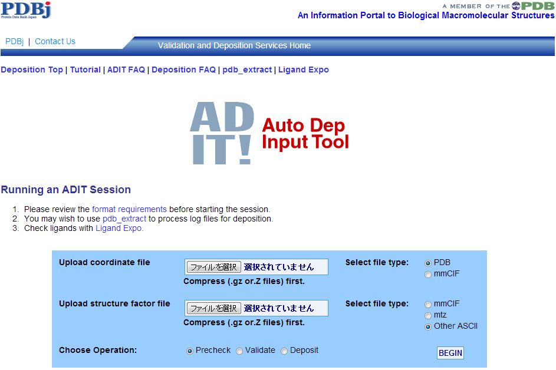
- ファイル形式のチェック 問題があれば、どこに問題があるかメッセージがでるので修正します。無ければ "Click here to continue to validation" から構造のチェックに進みます。 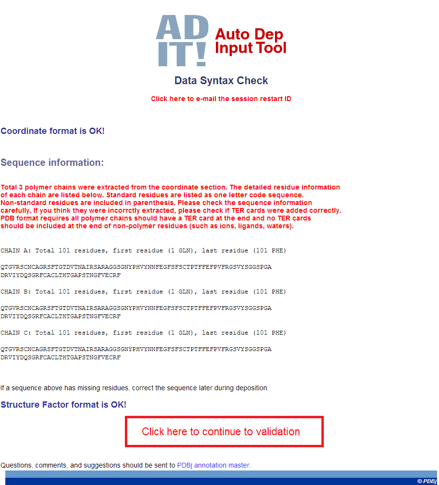
- 構造のチェック 構造に問題があるところがあれば、修正して精密化をやり直します。 無ければ "Click here to continue to Deposition Session" から登録に進みます。 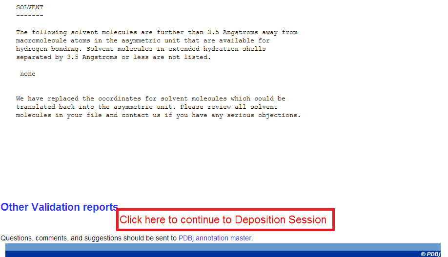
- アミノ酸配列の入力 登録するタンパク質のアミノ酸配列などを入力して、"Save Sequence" から次に進みます。
- Session restart ID 中央の "RESTART"の項目に "Session restart ID" を控えておきます。このIDがあれば、ブラウザを閉じたり しても続きから始めることができます。
- 必要事項の入力 左側の "Categories" を一つずつ選んで必要事項を入力していきます。結構たくさんあります。
- 確認 入力が終わったら、上の "PREVIEW ENTRY" から項目を一覧にして確認します。
- 確定 上の "DEPOSIT" でデータを確定します。足りたい項目があれば、メッセージがでるので入力します。 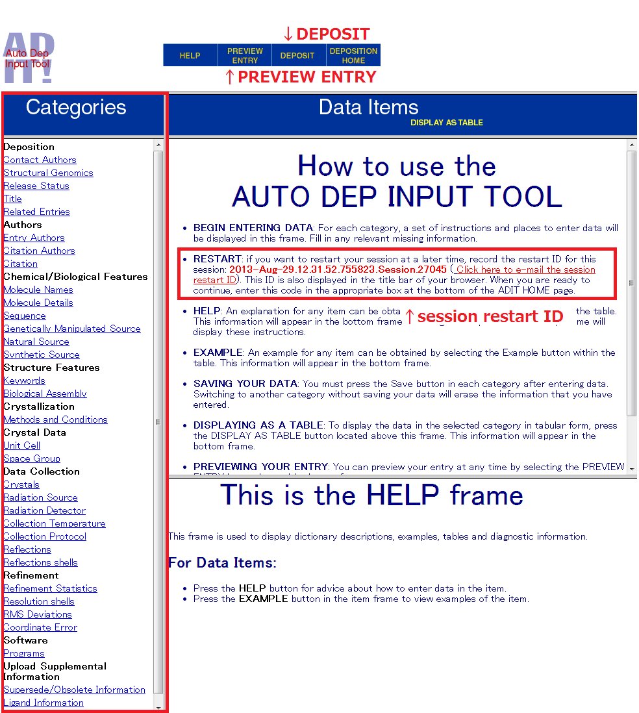

確認
確認ができたら、 "Continue to Deposit"
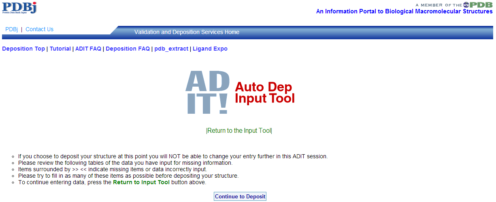
最終確認
最終確認です。"DEPOSIT NOW"を押すともう戻れません。
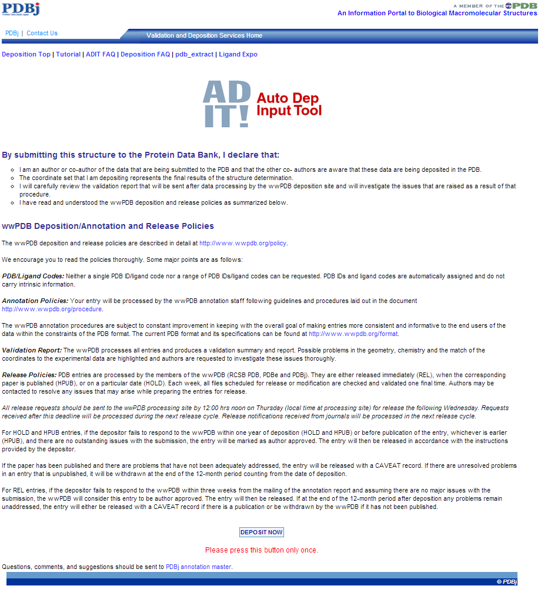
終了
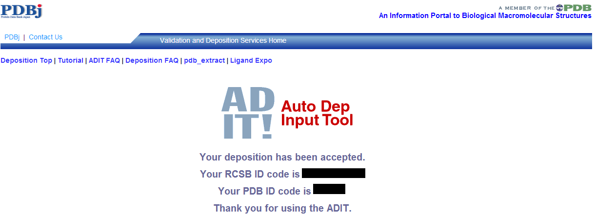
登録後
追記予定PyMOL
- インストール
- 基本操作
- コマンドの基本
- 作図に役立つコマンド+α
- 静電ポテンシャルの表示
- 疎水性度の表示
- 保存度による色分け
- 3DCGプリント
- ラベル
- 分子の重ね合わせ
- 水素結合
- 距離の測り方
- カメラ方位
- リガンド結合部位の表示
- 電子密度マップ mesh
- 電子密度マップ volume
- 電子密度マップ FFT
- ボール&スティックモデル
- cavityの表示
- pocketの表示
- 相互作用部位の表示
- 動画の作り方 GUI編
- 動画の作り方 コマンド編
- 二次構造の割り当て（DSSP）
- 透明
- 温度因子
- 点変異の導入
CCP4mg
3Dプリンター
おうちでできる構造解析
- 概要
- インストール & 準備
- iMosflm
- SCALA
- Matthews係数
- 分子置換モデル
- HKL2000 概要
- HKL2000
- HKL2000 scalepack2mtz
- 空間群の決定
- HKL2000 ログを読む
その他
- 保存度による色分け
(chimera編) - Excelでまとめる
アライメント - PowerPoint
オリジナルテンプレート - アニメーションGIFの
作り方 giam編 - アニメーションGIFの
作り方 ImageMagick編 - 初めてのPDB登録